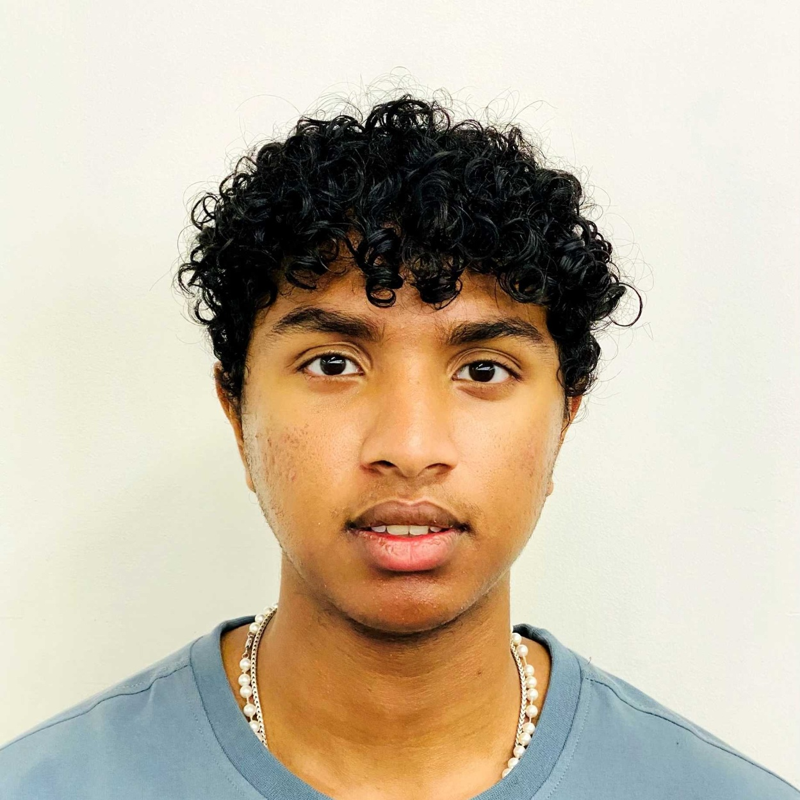
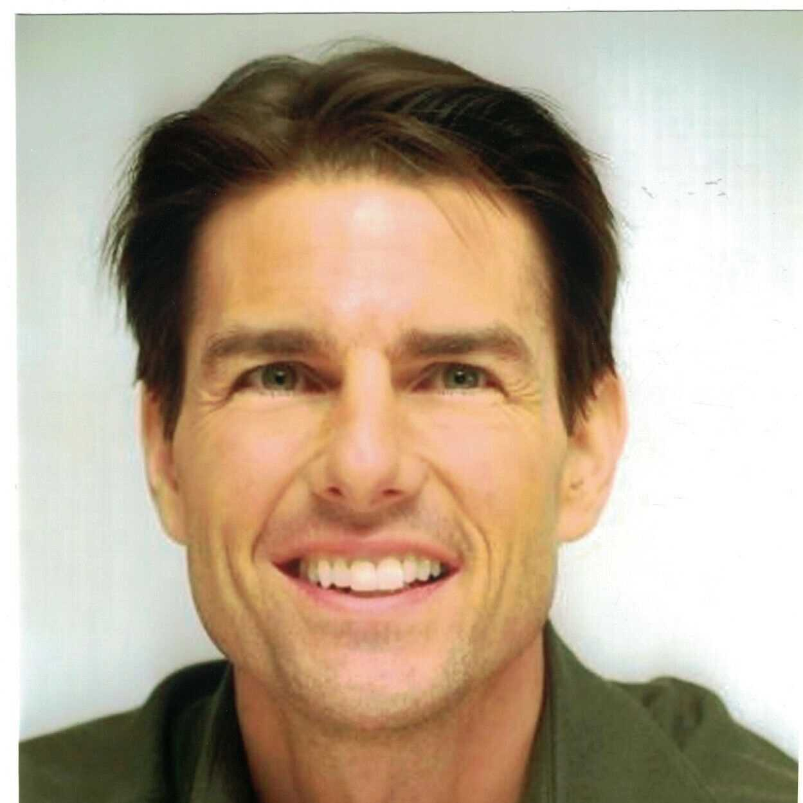
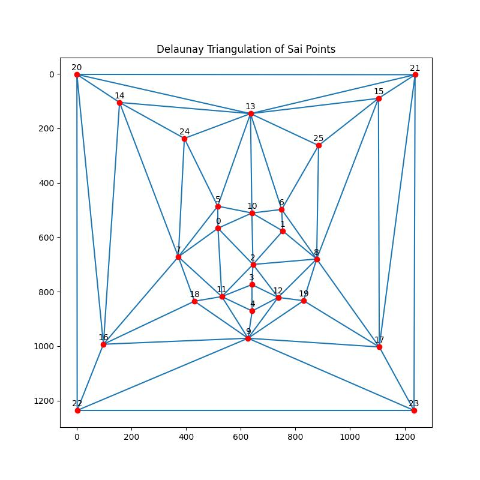
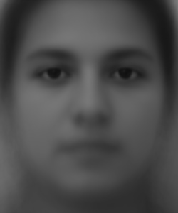
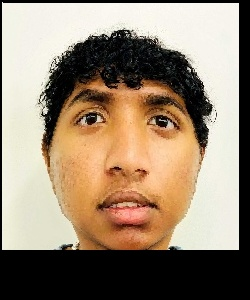
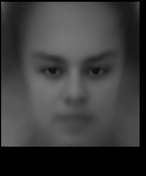
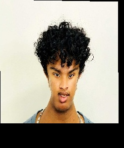
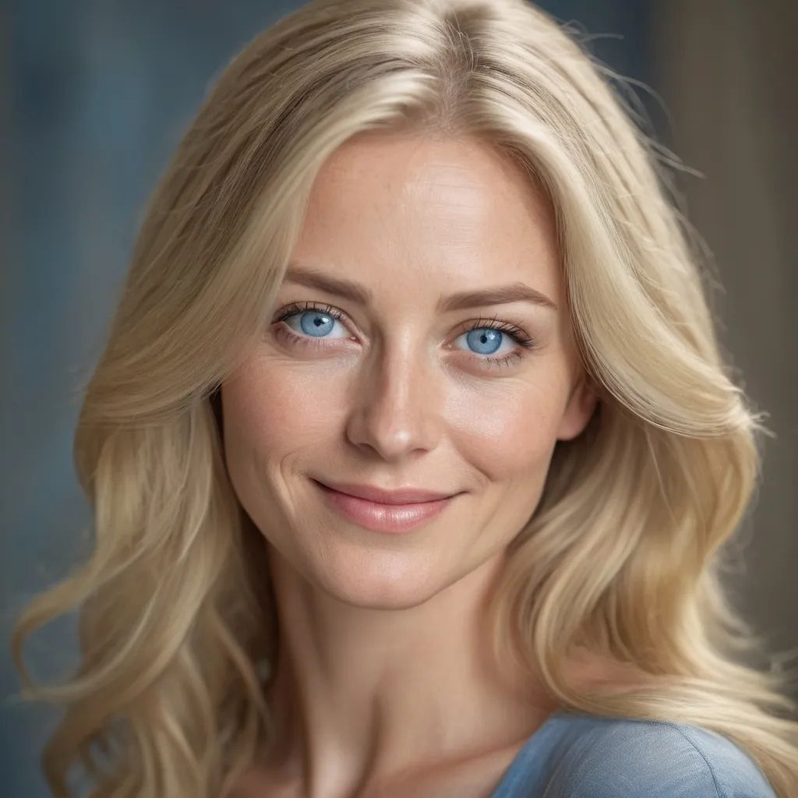
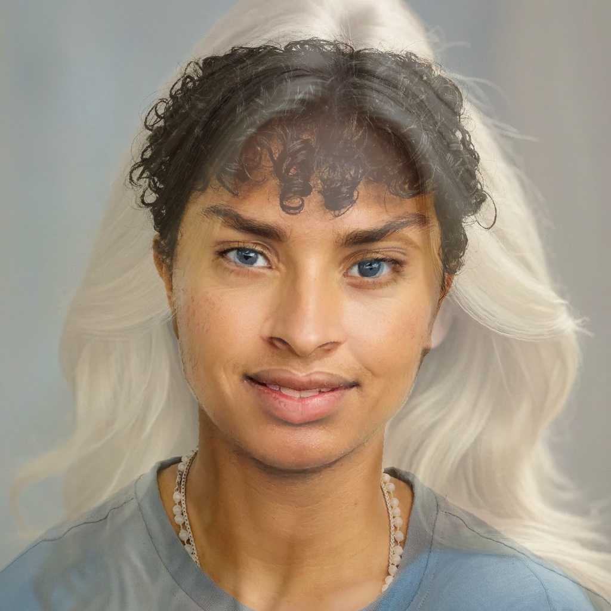

Programming Project #2: Fun with Filters and Frequencies!
By Sai Kolasani
Introduction
In this project, I produce a "morph" animation of my face into someone else's face, compute the mean of a population of faces, and extrapolate from a population mean to create a caricature of myself and more.
Part 1. Defining Correspondences
First, I cropped and rescaled an image of myself and an image of Tom Cruise to have the same dimensions so that our faces have a similar size and aspect ratio.
I then used the spec-provided online tool to select 24 correspondence points for each of the two images (including the four corners).
Finally, I generated a Delaunay triangulation at the midway points of the two sets of correspondence points.
Results

Sai's Headshot

Tom's Headshot

Delaunay Triangles for Sai's CorrespondencesDelaunay Triangles for Toms's Correspondences
Part 2. Computing the "Mid-way Face"
In this section, I compute the "mid-way face" by averaging the geometry and appearance of two input images. The steps to achieve this are outlined below:
Methodology Overview
Compute Average Shape:
The average shape is computed by taking the midpoint of each corresponding keypoint between the two faces. This creates a set of midway key points , representing the geometric average of both faces.
Delaunay Triangulation:
Next, I apply a Delaunay triangulation to the midway keypoints. This divides the face into triangles, used for affine transformations of both input faces.
Affine Transformation Calculation:
For each triangle from both original faces, an affine transformation matrix is computed using the computeAffine() function. This matrix maps the triangles from their original positions to the corresponding triangle in the average face.
Warping Faces into the Average Shape:
Each face is warped into the average shape by applying the affine transformation for each triangle. A polygon mask is generated using polygon() to isolate the pixels in each triangle, and the transformation is applied to warp the original image pixels to the average shape.
Combine Warped Faces:
Once both faces have been warped into the average geometry, I compute the final "mid-way face" by averaging the pixel values of the two warped images. This gives us a face with the average geometry and a blend of the colors from both input images.
Sai's HeadshotTom's HeadshotSai + Tom Midway Headshot
Part 3. The Morph Sequence
In this part, I create a morph sequence between two images (A and B) using the key points and the Delaunay triangulation structure from Part 2. The morph sequence smoothly transitions between the two images by gradually warping and cross-dissolving them over multiple frames.
Methodology Overview
Warp and Dissolve:
I use the key points from both images to interpolate between them. The warping is controlled by warp_frac, which transitions the shape between the two images, while dissolve_frac controls the blending of the colors from both images.
Morph Function:
The morph() function takes two images, their key points, and the Delaunay triangulation to warp each face into an intermediate shape. For each frame, warp_frac and dissolve_frac are adjusted to gradually transition between the original and final images.
Create Sequence
The morph sequence is generated by creating multiple frames, each corresponding to a different value of warp_fraction and dissolve_fraction in the range [0,1].
Sai to Tom Morph
Part 4. The "Mean face" of a population
In this part, I compute the average face shape from a population dataset and morph each face into this average shape. I then display the final mean face and provide comparisons between your face and the average geometry.
Methodology Overview
Compute the Average Shape:
I first compute the average shape by taking the mean of the key points for each face in the dataset. This results in a set of average key points representing the mean geometry of the population.
Morph Each Face into the Average Shape:
For each face in the dataset, I use Delaunay triangulation on the average key points and morph the face to match the average shape. This is done by warping the facial features using an affine transformation for each triangle.
Compute the Mean Face:
I compute the mean face by averaging all the morphed faces. The resulting mean face image shows the population's average facial geometry and texture.
Below are 3 example faces of people in the population and the population mean face.
Man 1Man 2Woman 1

Population Mean Face
Face Morphs

Sai's face morphed to average geometry

Average face morphed to Sai's geometry
Part 5. Caricatures: Extrapolating from the mean
In this part, I produce a caricature of my face by exaggerating the differences between my face and the population mean. I compute an extrapolated version of my key points and morph the original face into this exaggerated geometry.
Methodology Overview
Extrapolate from the Mean:
I compute the exaggerated key points by extrapolating the differences between my face's and the mean face's key points. This is done using a scaling factor, alpha, which determines how much to exaggerate the features. A value of alpha = 1.4 is used in this example.
Perform Delaunay Triangulation:
I apply a Delaunay triangulation on the new, exaggerated key points to divide the face into triangles. This allows us to warp the face to match the new caricature geometry.
Morph the Face into the Caricature Geometry:
Using the affine transformation for each triangle, I morph the original face into the exaggerated key points. The result is an exaggerated version of my face or a caricature.

Caricature of Sai's Face (Alpha = 1.4)
Notes
Notice how when my face was warped to match the average geometry, it was widened, but the caricature had the opposite effect where my face became much more narrow. Particularly shrinking my face to a smaller size and expanding the corner triangles.
Bells and Whistles: Attempting to convert myself to a woman
In this part, I attempt to change the gender of the headshot of myself to appear feminine and with blue eyes. As can be seen by the results below, I look much more feminine in the blended image.
Sai's Headshot

Blonde Woman

Sai warped into a woman